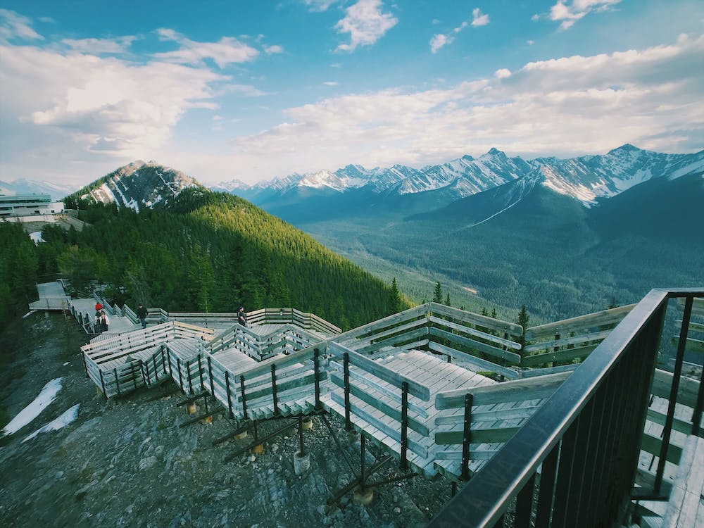

Banff National Park, located in Alberta, Canada, is one of the oldest
and most renowned national parks in the world. Covering an area of
approximately 6,641 square kilometers (2,564 square miles), this
UNESCO World Heritage Site is celebrated for its stunning mountain
landscapes, pristine wilderness, and diverse wildlife.
Trivia and Important Timeline
1885 - Banff National Park is established as Canada's first national park and the third in the world.
1888 - The luxurious Banff Springs Hotel opens its doors, becoming an iconic landmark within the park.
1905 - The park's boundaries are expanded to include more of the stunning Rocky Mountain landscape.
1930 - Banff National Park is designated as a UNESCO World Heritage Site, recognizing its outstanding natural beauty and significance.
1940s - During World War II, the park is used for military training, demonstrating its versatility and importance.
1960s - The completion of the Icefields Parkway connects Banff to Jasper National Park, forming a breathtaking mountain highway.
1981 - Banff National Park celebrates its centennial anniversary, marking a century of conservation and enjoyment by visitors.
What to expect?
Banff National Park offers a wide range of experiences for nature enthusiasts. You can embark on breathtaking hikes through the rugged mountain terrain, explore thrilling biking trails, and paddle on pristine lakes. For those seeking a more leisurely adventure, scenic drives with opportunities for picnics amidst stunning vistas are abundant. Wildlife enthusiasts can look forward to observing diverse animal species in their natural habitat.
In the winter months, Banff transforms into a winter wonderland, offering activities such as serene snowshoe walks, exhilarating skiing adventures, fat biking on snowy trails, ice skating on frozen lakes, and much more!
Vermillion Lakes
Peyto Lake

Sulphur Mountain
Downtown Banff Avenue "In the heart of Banff, where nature's poetry is written in peaks and valleys."
Top Attractions Near Banff Downtown
Sulphur Mountain summit
Peyto Lake
Banff Gondola boardwalk
Banff Gondola - Take a scenic gondola ride to an elevation of 2,281 meters for stunning panoramic views of the Canadian Rockies.
Approx. 8 minutes (6 km) away from Banff downtown.
Lake Minnewanka - Explore the serene Lake Minnewanka, perfect for activities such as boat tours, hiking, and picnicking.
Approx. 15 minutes (10 km) away from Banff downtown.
Sulphur Mountain - Hike or take the Banff Gondola to the summit of Sulphur Mountain for breathtaking views and a visit to the Cosmic Ray Station.
Approx. 11 minutes (6 km) away from Banff downtown.
Wildlife Viewing - Banff offers numerous opportunities to observe native wildlife, including elk, deer, and bighorn sheep.
Various locations near Banff downtown.
Vermilion Lakes - Enjoy the scenic beauty of Vermilion Lakes with options for birdwatching and photography.
Approx. 5 minutes (2 km) away from Banff downtown.
Banff Upper Hot Springs - Relax in the soothing mineral-rich waters of the Banff Upper Hot Springs while surrounded by stunning mountain views.
Approx. 10 minutes (5 km) away from Banff downtown.
Columbia Icefield - Discover the massive Columbia Icefield, where you can take guided tours and even walk on the Athabasca Glacier.
Approx. 2 hours (132 km) away from Banff downtown.
Johnston Canyon - Hike along catwalks and bridges to experience the beauty of Johnston Canyon's waterfalls and narrow gorges.
Approx. 30 minutes (25 km) away from Banff downtown.
Banff Avenue - Stroll along Banff Avenue for shopping, dining, and exploring the vibrant heart of Banff.
Located in Banff downtown.
Cascade Gardens - Visit the beautifully landscaped Cascade Gardens for a peaceful escape in the heart of Banff.
Located in Banff downtown.
Activities in Banff
Banff is a playground for outdoor enthusiasts. You can camp under the stars, hike scenic trails, and ride your bike through stunning landscapes. Don't forget to keep an eye out for wildlife like bears and elk. Banff's natural beauty offers endless adventures for everyone
Boating at Maligne Lake
Picnic at Cascade Garden
Biking in Banff
Hiking
Discover a variety of hiking trails suitable for all skill levels. From easy walks to challenging alpine hikes, Banff presents stunning scenery, waterfalls, and remarkable viewpoints.
Tunnel Mountain Trail - Easy - Short hike to Tunnel Mountain with panoramic views - 2.3 km
Official Site - Enjoy sweeping views of Banff.
Johnston Canyon Trail - Moderate - Hike to stunning waterfalls and narrow gorges - 5.4 km
Official Site - Explore the captivating canyon.
Cascade Mountain Trail - Strenuous - Challenging hike with panoramic views - 12.6 km
Official Site - Conquer the summit for breathtaking vistas.
Lake Agnes Tea House Trail - Moderate - Scenic hike to a charming tea house - 6.8 km
Official Site - Enjoy tea and stunning views.
Biking
Explore the magnificent landscapes of Banff National Park on your bicycle. With a range of trails suitable for cyclists of all skill levels, Banff offers a memorable biking experience, from leisurely rides through serene forests to challenging routes with breathtaking mountain views.
Banff Legacy Trail - Easy - Scenic trail with views of the Bow River and surrounding mountains - Approximately 22 km
Official Site - Enjoy a picturesque ride along the Bow River.
Tunnel Bench Loop - Moderate - Trail offering stunning views of Lake Minnewanka and the surrounding area - Approximately 9 km
Official Site - Pedal through the scenic beauty of Lake Minnewanka.
Camping
Experience the natural beauty of Banff National Park by camping in its pristine surroundings. From riverside campsites to tranquil forested locations, Banff offers a range of camping options to suit your preferences. Here are some top camping sites to consider:
Two Jack Lake Camp
Tunnel Mountain Campground
Otentik Camping
Tunnel Mountain Village Campground - Convenient campground near Banff town with stunning views.
Description: Tunnel Mountain Village Campground is a popular choice for campers looking to explore Banff National Park, offering easy access to hiking trails and downtown Banff.
Facilities: Amenities include flush toilets, showers, fire pits, picnic tables, and a playground.
Approximate Fee Per Day: $28.00 - $34.00 CAD
Official Site - Check for availability and fees.
Wapiti Campground - Peaceful riverside campground in close proximity to Banff townsite.
Description: Wapiti Campground offers a serene setting by the river, and you may even spot majestic elk during your stay.
Facilities: Amenities include flush toilets, showers, fire pits, picnic tables, and interpretive programs.
Approximate Fee Per Day: $27.40 - $31.50 CAD
Official Site - Get detailed information on fees.
Wabasso Campground - Smaller and quieter campground in a serene forested setting.
Description: Wabasso Campground is perfect for those seeking a tranquil camping experience surrounded by nature's beauty.
Facilities: Facilities include pit toilets, picnic tables, and fire pits.
Approximate Fee Per Day: $21.50 - $23.50 CAD
Official Site - Check for current fees and availability.
William A. Switzer Provincial Park - Explore a beautiful provincial park with various camping options.
Description: This park offers a range of campsites nestled in serene wilderness, providing a unique camping experience.
Facilities: Facilities vary by campground but typically include toilets, picnic tables, and fire pits.
Approximate Fee Per Day: Varies by campground
Official Site - Find details on campground fees and availability.
FYI: Camping fees can vary depending on the season, so it's a good idea to plan ahead and secure your spot in this wilderness paradise. For the most up-to-date information on campsite fees and availability, please visit the official Parks Canada - Banff National Park website.
You can check the other Canadian National Parks below: